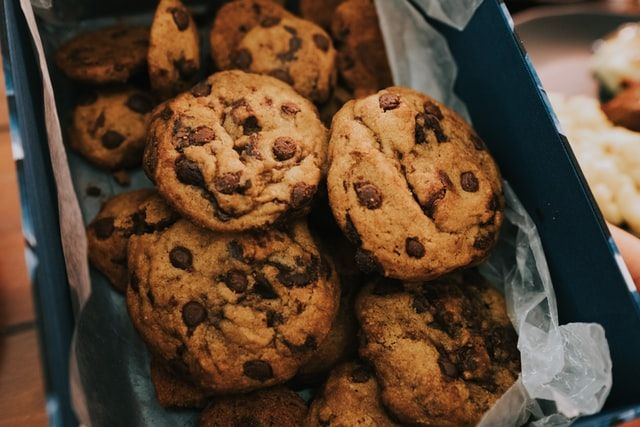

Biscuits aux brisures de chocolat
Préparation: 20 minutes
Cuisson: 13 minutes
Portions:
Ingrédients
-
1/2 t de beurre

-
2/3 t de cassonade
-
1/3 t de sucre
-
1 oeuf
-
1 c. à thé d'extrait de vanille
-
1 1/2 t de farine
-
1/2 c. à thé de sel
-
1/2 c. à thé de poudre à pâte
-
1/8 c. à thé de bicarbonate de soude
-
1 1/2 t de brisures de chocolat mi-sucré
Instructions
Dans un grand contenant, battre ensemble
- 1/2 t de beurre
- 2/3 t de cassonade
- 1/3 t de sucre
Incorporer dans le mélange en battant
- 1 oeuf
- 1 c. à thé d'extrait de vanille
Dans un deuxième contenant, combiner
- 1 1/2 t de farine
- 1/2 c. à thé de sel
- 1/2 c. à thé de poudre à pâte
- 1/8 c. à thé de bicarbonate de soude
Incorporer en remuant les ingrédients secs et 1 1/2 t de
brisures de chocolat mi-sucré
au premier contenant.
Déposer des cuillerées de pâte sur une plaque et cuire au four
préchauffé à 350 °F (180 °C) de 13 à 15 minutes.